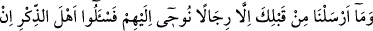
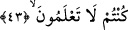

Yukarıdaki âyetlerin işârî tefsîri ise şöyledir: Onlar ki şerîata riâyet ederek
bedenleriyle Allah’ın yasakladığı şeylerden Allah yolunda hicret ettiler. Tarîkata riâyet
ederek kalbleriyle âhiret hazlarından Allah ile hicret ettiler. Hakîkat cezbeleriyle
yakınlık (kurbet) makamlarını aşarak ve kerâmetleri görmeyi geçerek ruhlarıyla Allah’a
hicret ettiler. Hatta hakîkî varlık denizinde yok olarak mecâzî varlıktan hicret ettiler.
Esfel-i sâfiline (aşağıların aşağısı olan dünyâya) indirildikten sonra artık onlar için
varlıkta Allah’tan başkası kalmadı. İşte biz onları hayatlarında iken en yakın kurbiyete
nâil kılarız. Dünyâdan çıktıktan, beşeriyyet vasıflarının hapsinden ve onlarla
kirlenmekten kurtulduktan sonra olan âhiret ecri, içinde bulundukları dünyâ
nîmetlerinden daha büyük, daha aziz, daha kıymetli, daha temiz ve daha mübârektir.
Keşke bunu takdir edip şükrünü edâ edebilselerdi.
Bunlar o kimselerdir ki, Allah’ın emirlerine sımsıkı sarılıp yasaklarından son derece
uzak kalarak sabır ve sebât ettiler. Müşâhede ve türlü ilâhî ikramlara nâil olmak için
mücâhede ve zorluklara katlandılar. Böylece ehl-i hâl mü’minler oldular.
Onlar Rablerine de tevekkül ederler. O’nu talebde sabrederek O’nu bulma konusunda
yine O’na tevekkül ederler. Sabırla yürüyüp tevekkülle uçarlar. Sonra sonsuza dek
Allah’ta hayrân olurlar. et-Te’vîlâtü’n-Necmiyye’de böyle geçmektedir.
Bilesin ki, Allah’a tevekkül eden ve tamâmen O’na bağlanan kimsenin her
meşakkatine Allah kâfî gelir. Kim de dünyâya ve onun ehline bağlanırsa onun işi tamam
olmaz. Çünkü Allah dilemedikçe dünyâ ehli ona ne bir fayda ve ne de bir hayır
sağlayabilir.
Ebû Saîd Harraz (k.s.) der ki: Mekke’de üç gün ikâmet ettik ve bir şey yemedik.
Yanımızda kuru otla örtülü deriden yapılmış bir su kabı olan bir fakir vardı. Bazen onu
beyaz bir ekmek yerken görürdüm. Ona: “Biz senin misâfirin olacağız.” “Elbette” dedi.
Yatsı vakti olunca elini bir direğe dokundurdu ve bana iki dirhem uzattı. Biz de onunla
ekmek aldık. Ona: “Bu dereceye nasıl ulaştın.” diye sordum. Dedi ki: “Ey Ebû Saîd!
Tek bir harfle mahlûkâtın değerini kalbinden çıkar ve ihtiyacına ulaşırsın.”
43. Senden önce de, kendilerine vahyettiğimiz kişilerden başkasını peygamber
olarak göndermedik. Eğer bilmiyorsanız, bilenlere sorun.
Peygamber (s.a.) Kureyş müşriklerine risâleti tebliğ edip onları Allah’a ibâdete
çağırınca onlar bunu inkâr ettiler. “Allah, peygamberini insan olarak göndermekten